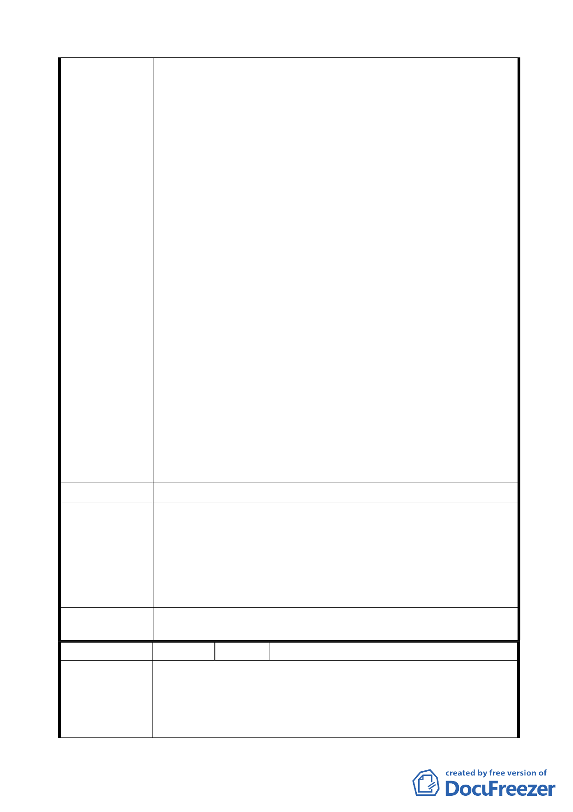

於捷運站東側，才屬合情合理。
3. 捷運站東側為廣大之公園、無住戶居住、亦無地上建築物，
屬臺北市政府公園用地，闢建為「交通廣場」實為最理想、
最適當之用地。其理由如下：
(1) 臺北市政府交通局可不必大費周章，浪費時間及公帑，辦
理多項補償拆遷費用之預算編列。因屬公園用地，無住戶
居住、亦無地上建築物。動工興建容易亦無阻力，可以最
少成本，達事半功倍之效。又適逢全球經濟不景氣及金融
風暴民眾失業、無工作者眾多，市府應將預算及可用資
源，資助並照顧無工作收入之臺北市市民。
(2) 捷運站西側若闢建「交通廣場」，對西側附近居民及住戶，
將造成日後因「交通廣場」停放汽機車時所帶來之排放廢
氣汙染及噪音的喧囂吵鬧，實為不智。
4. 若因捷運站西側之現況景觀，有礙觀瞻，形象不佳，恐影
響國際花卉展覽之舉辦。則本人建議市府相關單位可就地
改善，加強美化及綠化工作項目，即可使捷運站西側煥然
一新，不致破壞國際花卉展覽之美好形象。
5. 本住戶堅決反對於捷運站西側闢建「交通廣場」，並強烈建
議「交通廣場」應闢建於捷運站東側。因為東側為廣大之
公園，讓「交通廣場」與公園相連接，更可擴大民眾休閒、
散步之腹地，視野上亦隨之擴大，形成視覺上良性互動的
美麗景觀。
建 議 辦 法 同上
基於無縫運輸的規劃理念，選擇將緊臨圓山捷運站西側地
區變更為交通廣場用地，規劃設置大眾運輸轉乘設施，以提供
市府回應意見
便捷的大眾運輸服務；若設置在捷運站東側，將受到玉門街的
阻隔，乘客須穿越玉門街才能進行轉乘，不僅使用不便，亦增
加安全上的顧慮。在捷運站西側設置大眾運輸轉乘設施，可帶
動捷運站西側老舊地區更新，促進西側地區整體發展。
一、 同編號 1 決議。
委 員 會 決 議 二、 依市府回應意見辦理。
編
號7
陳情人 柯清雲
1.背景合法：祖父為鐵路局老員工，一生奉獻鐵路局，定期
陳 情 理 由 向鐵路局繳租金並自行興建房屋；鄰居很多老爺爺奶奶一
輩子住在圓山捷運站西側，一住就是六、七十年的人生。
市府如強制拆遷很多人將成為無殼蝸牛，老人家頓失依靠
-7-